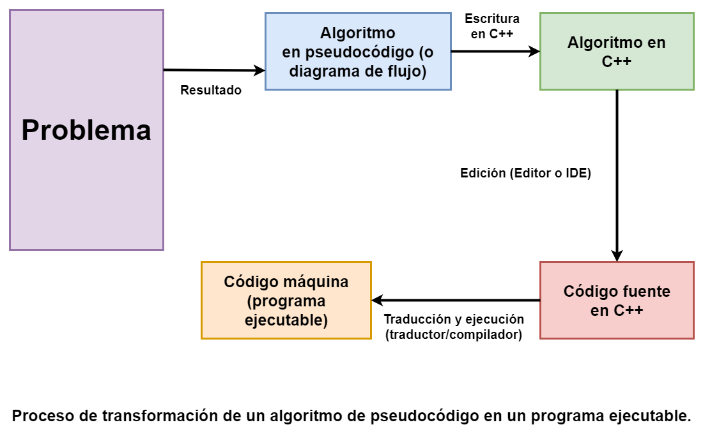

1. Sistemas Operativos
5. Lenguajes de Programación
Como se ha visto anteriormente, para que un procesador realice un proceso se le debe suministrar en primer lugar un algoritmo adecuado. El procesador debe ser capaz de interpretar el algoritmo, lo que significa:
• Comprender las instrucciones de cada paso.
• Realizar las operaciones correspondientes.
Cuando el procesador es una computadora, el algoritmo se ha de expresar en un formato que se denomina programa, ya que el pseudocódigo o el diagrama de flujo no son comprensibles por la computadora, aunque pueda entenderlos cualquier programador. Un programa se escribe en un lenguaje de programación y las operaciones que conducen a expresar un algoritmo en forma de programa se llaman programación. Así pues, los lenguajes utilizados para escribir programas de computadoras son los lenguajes de programación y programadores son los escritores y diseñadores de programas. El proceso de traducir un algoritmo en pseudocódigo a un lenguaje de programación se denomina codificación, y el algoritmo escrito en un lenguaje de programación se denomina código fuente.
En la realidad la computadora no entiende directamente los lenguajes de programación sino que se requiere un programa que traduzca el código fuente a otro lenguaje que sí entiende la máquina directamente, pero muy complejo para las personas; este lenguaje se conoce como lenguaje máquina y el código correspondiente código máquina. Los programas que traducen el código fuente escrito en un lenguaje de programación, como por ejemplo C++, a código máquina se denominan traductores.

Hoy en día, la mayoría de los programadores emplean lenguajes de programación como C++, C, C#, Java, Visual Basic, XML, HTML, Perl, PHP, JavaScript, entre otros, aunque todavía se utilizan, sobre todo profesionalmente, los clásicos COBOL, FORTRAN, Pascal o el mítico BASIC. Estos lenguajes se denominan lenguajes de alto nivel y permiten a los profesionales resolver problemas convirtiendo sus algoritmos en programas escritos en alguno de estos lenguajes de programación.
Cada lenguaje de programación tiene un conjunto o “juego” de instrucciones (acciones u operaciones que debe realizar la máquina) que la computadora podrá entender directamente en su código máquina o bien se traducirán a dicho código máquina. Las instrucciones básicas y comunes en casi todos los lenguajes de programación son:
• Instrucciones de entrada/salida. Instrucciones de transferencia de información entre dispositivos periféricos y la memoria central, tales como "leer de..." o bien "escribir en...".
• Instrucciones de cálculo. Instrucciones para que la computadora pueda realizar operaciones aritméticas.
• Instrucciones de control. Instrucciones que modifican la secuencia de la ejecución del programa.
Obra publicada con Licencia Creative Commons Reconocimiento Compartir igual 4.0